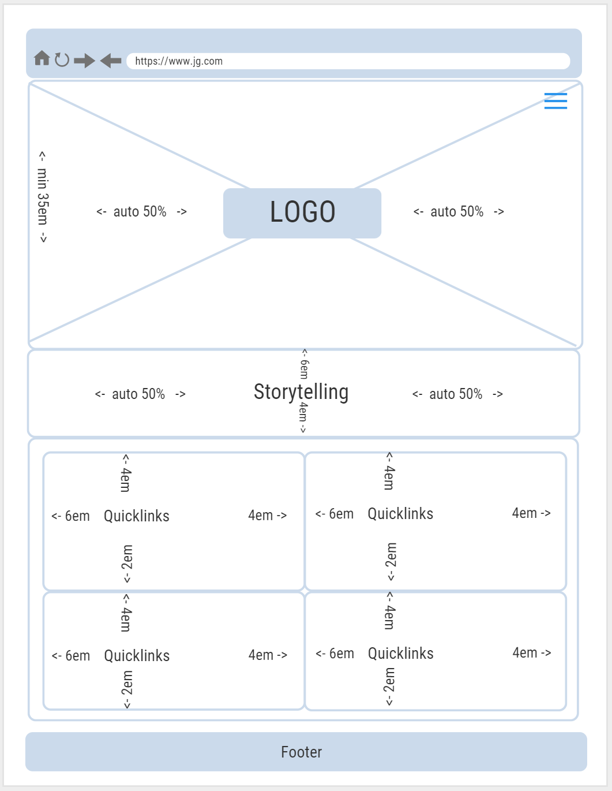
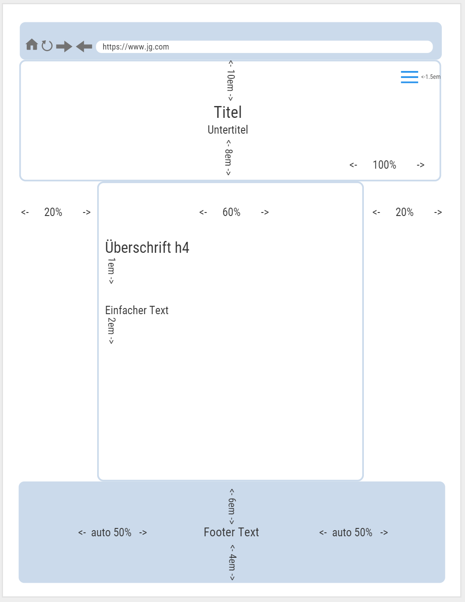

Über uns
Storytelling
Unter der Storytelling Methode wird verstanden, dass man Informationen und Werte vermittelt, indem man eine Geschichte erzählt. Eine gut erzählte Geschichte kann den Leser bzw. Hörer begeistern, mitreißen und binden, also seine Aufmerksamkeit auf sich ziehen.
Auf der Startseite finden Sie mein Beispiel.
Sitemap
Eine Sitemap ist eine Datei, in der man Informationen zu Seiten, Videos und anderen Dateien auf deiner Website angegeben werden. Suchmaschinen wie Google lesen diese Datei, und verwenden sie, um die Website effizienter crawlen zu können.
Eine Sitemap wird vor allem benötigt, wenn die Website:
- sehr umfangreich ist
- ein grosses Archiv mit Inhaltsseiten hat, die untereinander nicht verbunden oder zumindest nicht gut verlinkt sind
- ein grosses Archiv mit Inhaltsseiten hat, die untereinander nicht verbunden oder zumindest nicht gut verlinkt sind
- neu ist und es verweisen nur wenige externe Links auf sie
- viele Rich-Media-Inhalte wie Videos und Bilder enthält oder in Google News angezeigt wird
Sie wird nicht zwingend benötigt, wenn die Website:
- Klein ist
- Intern umfassend verlinkt ist
- Wenige Mediendateien oder Nachrichtenseiten
XML-Beispiel
Wenn Sie sich für das Hinzufügen einer Sitemap entscheiden, können Sie hier Informationen zur Erstellung von Sitemaps finden.
Wireframes
Wireframes sind eine sehr vereinfachte Repräsentation des Designs einer Website. Sie werden zur Darstellung für Positionierung und Grösse der Elemente verwendet. Damit können Elemente innerhalb des Layouts anordnen. Wireframes sind nicht für das Design zuständig.
Folgende Punkte sollen dabei abgebildet werden:
- Die Hauptelemente der Inhalte (Was?)
- Die Struktur der Informationen (Wo?)
- Eine Beschreibung und grundlegende Visualisierung der Benutzerschnittstelle (Wie?)
Bei der Erstellung sollte man im Hinterkopf behalten, dass ein Wireframe eine der ersten visualisierten Versionen des Designs ist und dies in einer vereinfachten Art und Weise.
 Dies sind zwei Beispiele für Wireframes.
Mockup
Mockups werden auf Grundlage ines Wireframes erstellt. Sie sind sehr viel detaillierter und dabei wird das Designkonzept schon angewandt. Ziel ist es so genau wie möglich an das spätere Erscheinungsbild heranzukommen. Sie werden für Kunden eingesetzt, um einen exakten Entwurf zu präsentieren. Sie sind wichtig für ein aussagekräftiges Feedback des Kunden.
Unterschiede Wireframes und Mockups
Zusammengefasst: Wireframes und Mockups sind grundsätzlich verschieden. Ein Wireframe zeigt nur die Struktur der Webweite auf, wohingegen das Mockup sehr viel detaillierter ist.
Style Guide
Ein Style Guide wird vor allen verwendet, um ein einheitliches Design zu schaffen. Er umfasst unter anderem das Logo, die Farben und Schriften und legt fest, in welchem Zusammenhang und auf welche Weise sie zum Einsatz kommen.
Für diese Webseite habe ich selbst ein StyleGuide erstellt.
StyleGuide.pdf